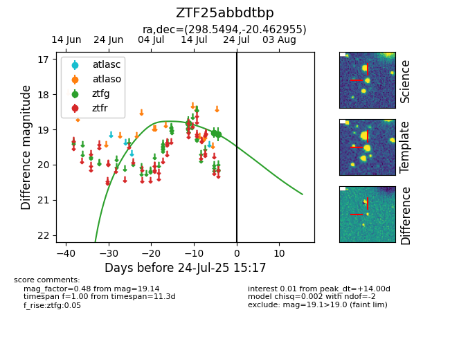

Target ZTF25abbdtbp at 2025-07-23 11:52, see:
FINK: fink-portal.org/ZTF25abbdtbp
Lasair: lasair-ztf.lsst.ac.uk/objects/ZTF25abbdtbp
ALeRCE: alerce.online/object/ZTF25abbdtbp
alt names
ZTF25abbdtbp (ztf,fink)
coordinates:
equatorial (ra, dec) = (298.5494,-20.46295)
galactic (l, b) = (20.6959,-22.63788)
photometry
last ztfg=19.14
3 ztfg detections
